This personal assistive robot uses a Raspberry Pi Zero 2W and ESP32 to bridge communication gaps for individuals with speech and hearing impairments. It features real-time Bengali sign-language-to-speech conversion and speech-to-text translation using a lightweight TFLite model, while autonomous tracking ensures the user remains monitored. The project combines custom machine learning with mobile robotics to provide a responsive, portable communication solution.
Computer VisionDeep LearningRoboticsNLPSign Language RecognitionAutomationSpeech-to-TextEmbedded Systems
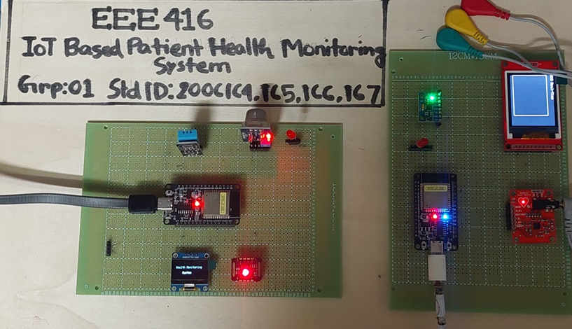
This is an IoT Based automated patient health monitoring system using ESP32 microcontroller and sensors. The sensors track vital signs and then generate alerts and notifications to send over the internet to the medical officers and family to alert about someone's health. While an continuous ECG is being monitored by a trained classifier to identify any severe heart disease using Machine Learning.
IoTAI/MLEmbedded SystemsTensorFlowSignal ProcessingSensorsPythonC++
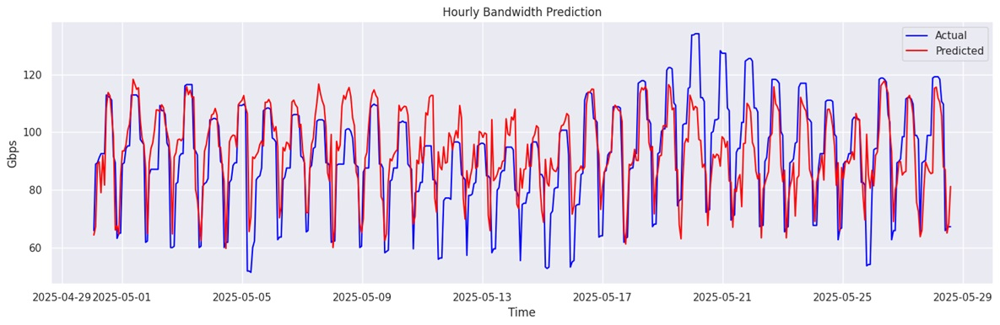
This project aims to predict the required bandwidth for a particular place at different times of the day. The project uses Time Series Analysis to forecast the required bandwidth using different ML Models. We compare and test various models to idenfity the best model so that bandwidth can be efficiently distributed based on previous knowledge.
MLTensorFlowData AnalysisPythonTime Series AnalysisAutoregression
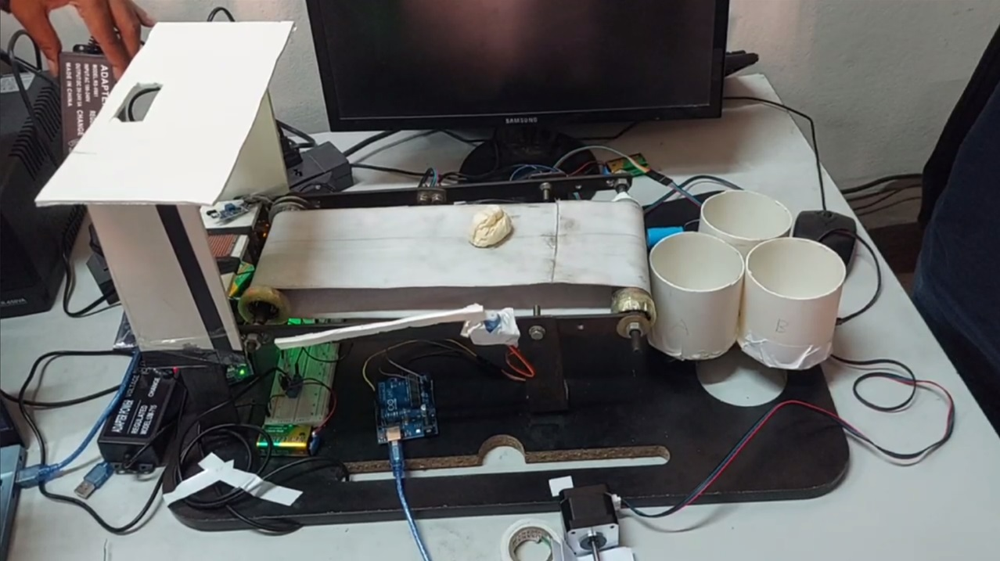
The project uses Computer Vision and Deep Learning to identify medical wastes and then drops them at separate bins automatically based on its category. The model used here is Yolov8l and Yolo11n. The project incorporates Deep Learning, Computer Vision and Embedded Systems control to handle the tasks.
Deep LearningComputer VisionControl SystemSensor IntegrationObject DetectionPythonC++
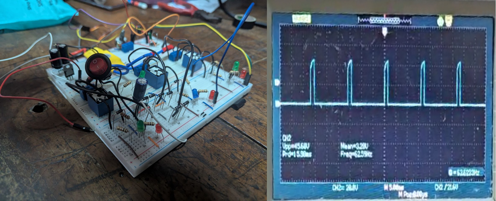
In this project, a regenerative braking system tailored for BLDC motors was designed and implemented with a focus on capturing and utilizing back electromotive force (EMF). Using a custom-built 555-timer PWM controller and a three-phase rectification stage, the prototype successfully demonstrates increased energy efficiency for electric vehicle applications.
Power Electronics DesignBLDC Motor ControlEnergy Storage SystemMATLAB\SimulinkHardware Prototyping
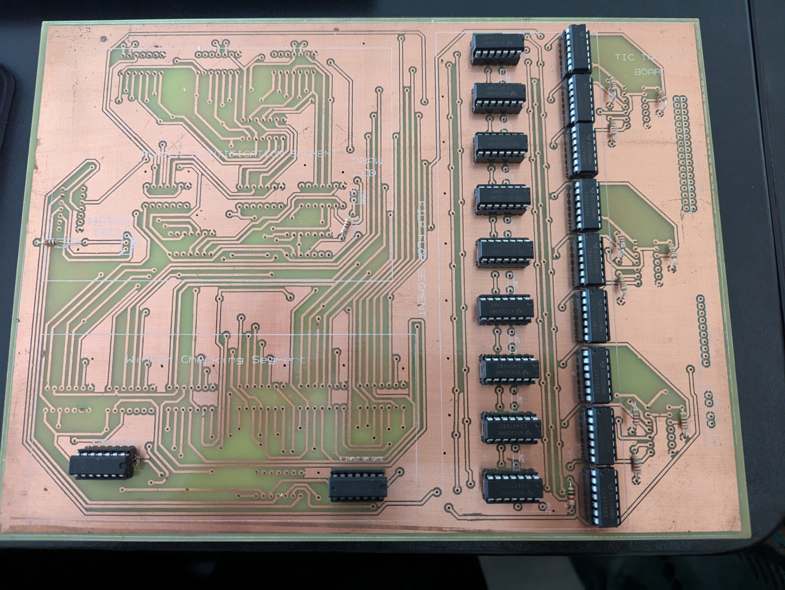
This digital Tic-Tac-Toe project utilizes discrete logic gates and flip-flops to automate turn-tracking, player assignments, and win-condition detection without the need for a microcontroller. Designed and simulated in Proteus, the hardware features a dual-PCB architecture that separates player input from the control logic, using bi-color LEDs to visually represent game states and outcomes. The final implementation provides a seamless, hardware-driven gaming experience that signals a winner or a draw through dedicated indicator LEDs.
Digital Logic DesignPCB DesignCircuit PrototypingProteus SimulationHardware Debugging
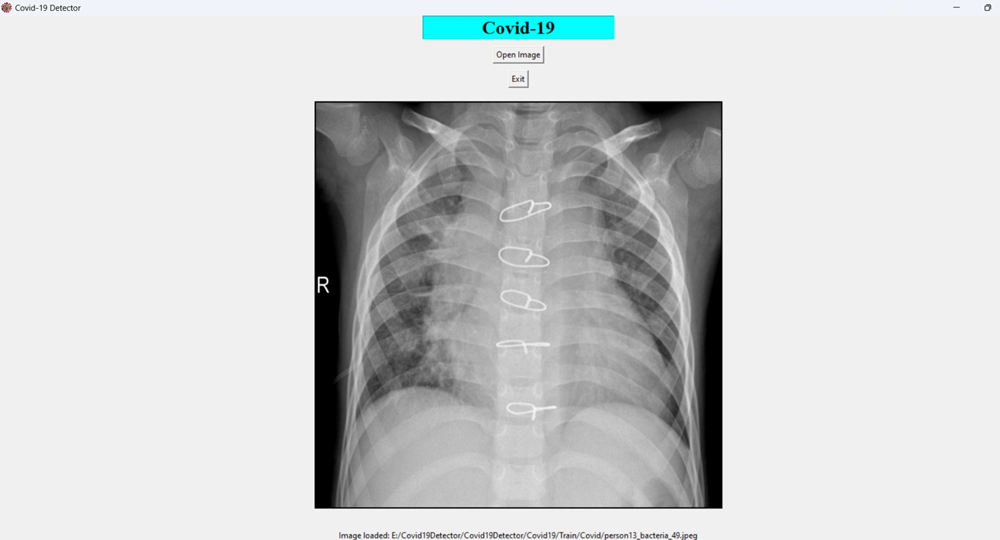
This project leverages Deep Learning to provide rapid screening for COVID-19 and Tuberculosis by deploying a CNN classifier on chest X-ray images. By integrating the model into a user-friendly GUI, the system offers near-instant diagnostic insights as a more efficient alternative to time-consuming RT-PCR techniques. This solution facilitates streamlined clinical workflows and accelerates the detection of critical respiratory conditions.
Deep LearningComputer VisionMedical Image ProcessingGUI DevelopmentCNN ArchitecturePythonTensorFlow
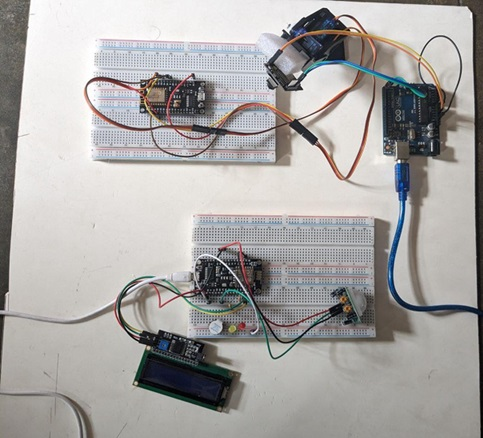
This project uses computer vision to build an anti-theft system. A continous feed keeps checking the perimeter and if an object is removed or motion is detected it triggers and alarm and sends notifcation to the phone employing a smart home protection system from theft.
IoTComputer VisionImage ProcessingMotion DetectionSmart Security SystemEmbedded System
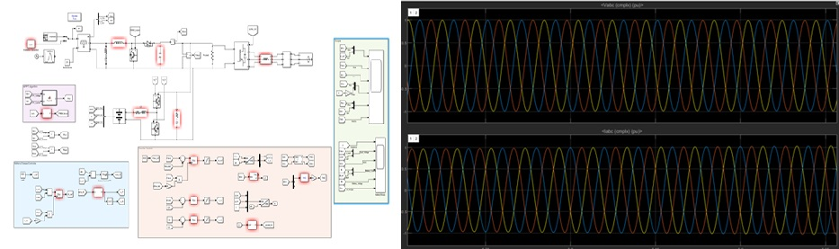
This project focuses on the design and simulation of a hybrid renewable energy system that integrates solar photovoltaic arrays and wind turbines using MATLAB Simulink. By utilizing advanced Maximum Power Point Tracking (MPPT) algorithms and coordinated control strategies, the system effectively mitigates the intermittency of renewable resources to provide a stable, efficient, and high-power three-phase output suitable for grid integration.
Power System DesignMATLAB SimulinkRenewable EnergyPower Electronics ControlMPPT AlgorithmHarmonic Mitigation
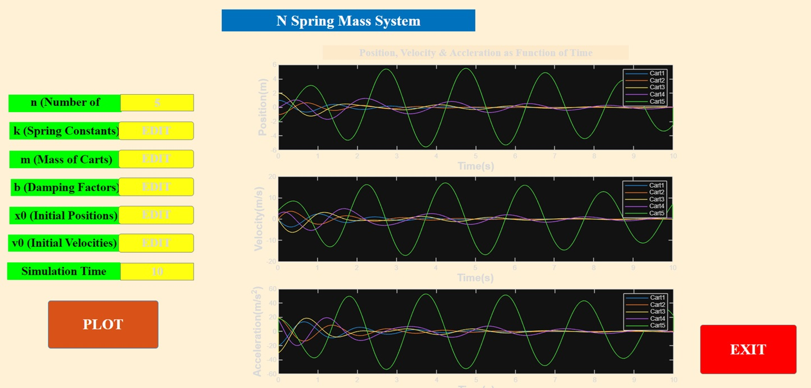
This is a MATLAB based project using numerical analysis method. In this project we can simulate the motion of an N spring mass system based on its initial position, velocity, coefficient of friction and damping constants. The project aims to solve an Nth order ODE using numerical analysis and then plots the motion of the spring against time.
MATLABNumerical AnalysisNth Order ODE SolverODE SimulationDynamic System ModellingData VisualizationMechanical System Simulation
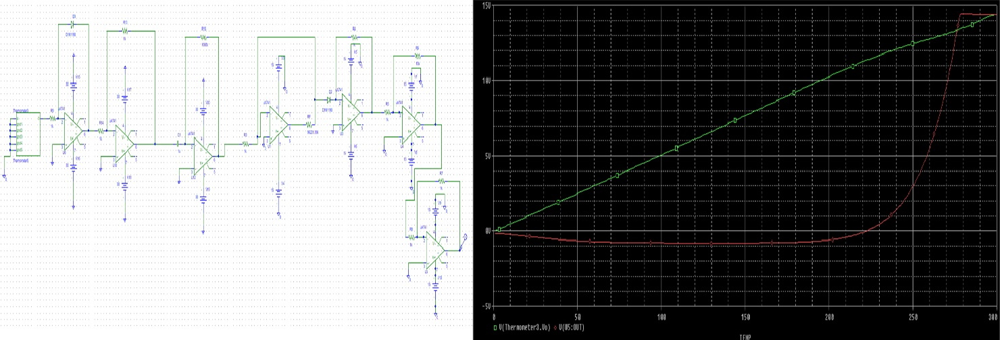
This project uses PSpice to design a Digital Thermometer that can measure the temperature by measuring the rate of the voltage change due to heat. Then using that thermometer circuit as a sub-circuit we design a full setup of measuring reaction rate of a chemical reaction using Arrhenius' Law.
Electronic Circuit DesignPSpice Circuit SimulationChemical Process SimulationHierarchical ModelingMathematical System MappingElectronic Measurement System
Chemical Process Data Visualization
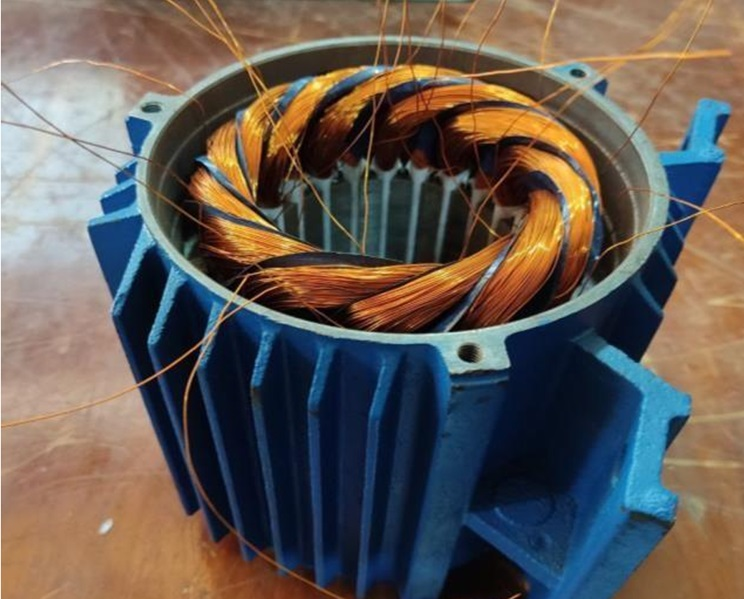
This is a hardware based project where a three phase 220V synchronous generator was designed and then implemented and then its performance was tested.
Hardware ImplementationSynchronous Machine ModelingStator Winding DesignAC Power GenerationGenerator Rating Optimization
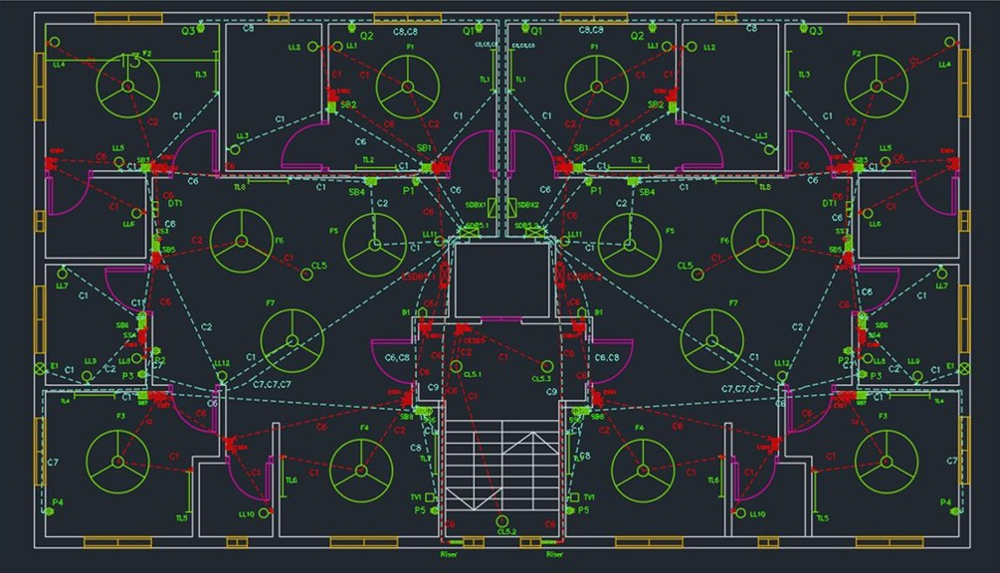
This is an Electrical Services Design Project for a 10 storied building containing all the calculations and drawings of floor plans, fittings, fixtures, conduit and emergency conduit, SDB, ESDB and MDB diagrams and calculations and Lightning protection for both typical floor and ground floor, basement and roof.
Electrical Services DesignLoad CalculationSingle Line DiagramsConduit Layout PlanningLightning Protection SystemFloor Plan DraftingEmergency Power Distribution
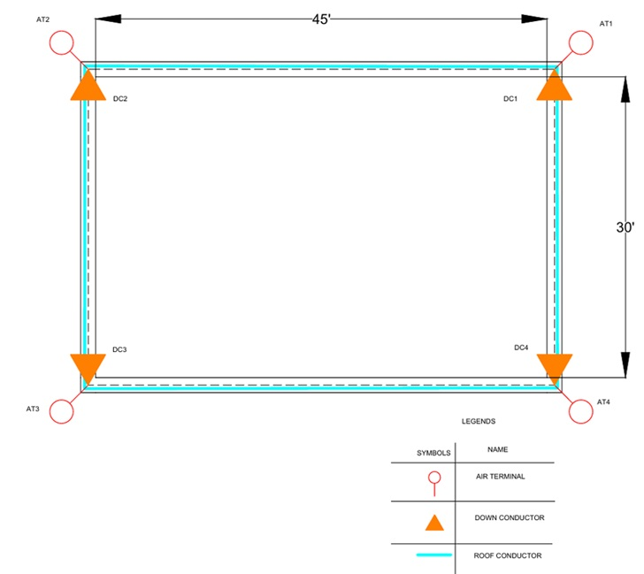
This project demonstrates the design of a lightning protection system for an18 storied building using Rolling Sphere Method having a roof area of 30ft x 40 ft with air terminals, down conductors, earth conductors and electrodes and protection zones.
Electrical Services DesignLightning Protection SystemProtection Zone AnalysisRolling Sphere MethodLightning Risk AssesmentGrounding System

Academic & Professional Socials
Connect with my educational content, visual work, and academic/professional profiles.
YouTube
Educational demos & project walkthroughs
ArtStation
Visual/design and presentation assets
LinkedIn
Professional profile and networking
GitHub
Project Repository
Google Scholar
Publications and citations